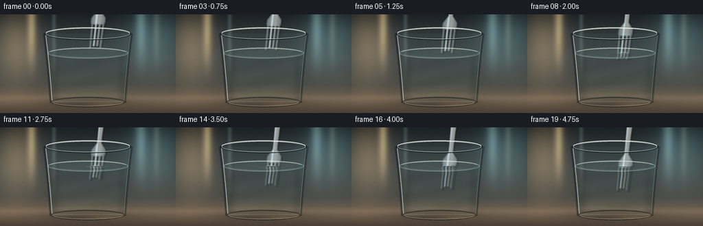
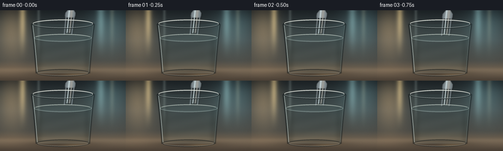

CODING AGENTS AS PIXEL WORLD MODELS
traex/DeepSeek-V4.1-Flash · phygen_074
点击播放 · 原生 RGB 像素
此结果可播放，但该运行尚未通过最终提交审核。页面展示不代表评测通过。
逐轮保存的候选
回放视频、检查图与代码变化。
每份候选均可单独播放。实际图片检查记录在下方工具轨迹中。
候选 01播放与检查图
点击播放 · 原生 RGB 像素


展开代码变化
--- 上一保存版本
+++ 本次保存版本
@@ -0,0 +1,386 @@
+from pathlib import Path
+
+import numpy as np
+from PIL import Image, ImageDraw, ImageFilter
+from scipy.ndimage import distance_transform_edt, gaussian_filter, map_coordinates, shift
+
+import artifact_io
+
+
+ROOT = Path(__file__).resolve().parent
+W, H, FPS, N = 256, 144, 4.0, 20
+S = 4
+WW, HH = W * S, H * S
+
+
+def smoothstep(a, b, x):
+ t = np.clip((x - a) / (b - a), 0.0, 1.0)
+ return t * t * (3.0 - 2.0 * t)
+
+
+def screen_y(values):
+ return values * S
+
+
+def make_background():
+ yy, xx = np.indices((HH, WW), dtype=np.float32)
+ y, x = yy / S, xx / S
+
+ stops_y = np.array([0, 24, 62, 103, 116, 124, 143], dtype=np.float32)
+ stops_c = np.array(
+ [
+ [27, 33, 36],
+ [45, 53, 55],
+ [64, 70, 70],
+ [75, 75, 70],
+ [100, 89, 75],
+ [120, 104, 85],
+ [73, 63, 53],
+ ],
+ dtype=np.float32,
+ )
+ bg = np.empty((HH, WW, 3), dtype=np.float32)
+ for channel in range(3):
+ bg[..., channel] = np.interp(y, stops_y, stops_c[:, channel])
+
+ # A warm, defocused window behind the left shoulder of the glass.
+ glow = np.exp(-(((x - 24) / 32.0) ** 2 + ((y - 44) / 52.0) ** 2))
+ bg += glow[..., None] * np.array([67, 49, 28], dtype=np.float32)
+ glow2 = np.exp(-(((x - 222) / 38.0) ** 2 + ((y - 36) / 48.0) ** 2))
+ bg += glow2[..., None] * np.array([24, 39, 41], dtype=np.float32)
+
+ # Broad vertical studio light shapes remain soft enough to read as bokeh.
+ for cx, width, strength, tint in [
+ (46, 5.5, 25, [105, 88, 55]),
+ (205, 7.0, 18, [65, 85, 84]),
+ (228, 3.2, 10, [91, 83, 61]),
+ ]:
+ band = np.exp(-((x - cx) / width) ** 2) * smoothstep(105, 8, y)
+ bg += band[..., None] * np.asarray(tint, dtype=np.float32) * (strength / 25.0)
+
+ # Slightly textured tabletop, with a luminous edge just behind the glass.
+ table = smoothstep(117.0, 124.0, y)
+ table_light = np.exp(-((y - 121.0) / 1.3) ** 2) * 16.0
+ bg += table_light[..., None] * np.array([1.0, 0.82, 0.58], dtype=np.float32)
+ grain = np.sin(x * 1.73 + np.sin(y * 0.18) * 1.2) * np.sin(y * 2.41)
+ bg += table[..., None] * grain[..., None] * np.array([3.0, 2.5, 1.8], dtype=np.float32)
+
+ img = Image.fromarray(np.clip(bg, 0, 255).astype(np.uint8))
+ img = img.filter(ImageFilter.GaussianBlur(radius=2.2 * S))
+ bg = np.asarray(img, dtype=np.float32)
+
+ # Fine photographic grain keeps the broad gradients from looking synthetic.
+ rng = np.random.default_rng(74)
+ bg += rng.normal(0.0, 1.25, (HH, WW, 1))
+ return bg
+
+
+def ellipse_mask(cx, cy, rx, ry):
+ yy, xx = np.indices((HH, WW), dtype=np.float32)
+ return ((xx - cx * S) / (rx * S)) ** 2 + ((yy - cy * S) / (ry * S)) ** 2 <= 1.0
+
+
+def polygon_mask(points):
+ img = Image.new("L", (WW, HH), 0)
+ draw = ImageDraw.Draw(img)
+ draw.polygon([(round(x * S), round(y * S)) for x, y in points], fill=255)
+ return np.asarray(img) > 127
+
+
+def composite(scene, color, alpha):
+ a = np.clip(alpha, 0.0, 1.0)[..., None]
+ scene[:] = scene * (1.0 - a) + np.asarray(color, dtype=np.float32) * a
+
+
+def make_fork_layer():
+ mask_img = Image.new("L", (WW, HH), 0)
+ draw = ImageDraw.Draw(mask_img)
+
+ def cx(y):
+ return 152.0 - 0.11 * (y + 30.0)
+
+ # Handle: a slim, softly tapered four-prong fork seen nearly edge-on.
+ handle = []
+ for y in np.linspace(-34, 42, 18):
+ width = 4.7 - 1.4 * smoothstep(-34, 42, y)
+ handle.append((cx(y) - width, y))
+ for y in np.linspace(42, -34, 18):
+ width = 4.7 - 1.4 * smoothstep(-34, 42, y)
+ handle.append((cx(y) + width, y))
+ draw.polygon([(round(x * S), round(y * S)) for x, y in handle], fill=255)
+
+ # Neck and shoulder flare.
+ shoulder = [
+ (cx(39) - 3.4, 39),
+ (cx(48) - 10.6, 49),
+ (cx(55) - 10.8, 55),
+ (cx(59) - 9.8, 59),
+ (cx(59) + 9.8, 59),
+ (cx(55) + 10.8, 55),
+ (cx(48) + 10.6, 49),
+ (cx(39) + 3.4, 39),
+ ]
+ draw.polygon([(round(x * S), round(y * S)) for x, y in shoulder], fill=255)
+
+ # Four rounded tines. The outer tines are a little longer.
+ offsets = (-8.2, -2.75, 2.75, 8.2)
+ lengths = (37.0, 34.0, 34.0, 37.0)
+ for off, length in zip(offsets, lengths):
+ y0 = 55.0
+ y1 = y0 + length
+ x0 = cx(y0) + off
+ x1 = cx(y1) + off * 0.92
+ draw.line([(round(x0 * S), round(y0 * S)), (round(x1 * S), round(y1 * S))],
+ fill=255, width=round(3.15 * S))
+ r = 1.55 * S
+ draw.ellipse((x1 * S - r, y1 * S - r, x1 * S + r, y1 * S + r), fill=255)
+
+ mask = np.asarray(mask_img) > 127
+ yy, xx = np.indices((HH, WW), dtype=np.float32)
+ y, x = yy / S, xx / S
+ rel = x - (152.0 - 0.11 * (y + 30.0))
+ edge = np.clip(distance_transform_edt(mask) / (2.2 * S), 0.0, 1.0)
+
+ # Brushed-steel bands: cool body, warm reflected window, white left specular.
+ body = np.stack(
+ [
+ 113.0 + 24.0 * np.cos(np.clip(rel, -10, 10) * 0.15),
+ 123.0 + 25.0 * np.cos(np.clip(rel, -10, 10) * 0.15),
+ 128.0 + 24.0 * np.cos(np.clip(rel, -10, 10) * 0.15),
+ ],
+ axis=-1,
+ )
+ spec = np.exp(-((rel + 2.7) / 1.55) ** 2)
+ warm = np.exp(-((rel - 2.2) / 2.8) ** 2)
+ body += spec[..., None] * np.array([62, 67, 66], dtype=np.float32)
+ body += warm[..., None] * np.array([22, 12, 3], dtype=np.float32)
+ body *= (0.60 + 0.40 * edge)[..., None]
+
+ # Subtle longitudinal streaks make the metal feel solid rather than painted.
+ body += (np.sin(y * 3.1 + rel * 0.35) * 3.2)[..., None]
+ rgba = np.zeros((HH, WW, 4), dtype=np.float32)
+ rgba[..., :3] = np.clip(body, 0, 255)
+ rgba[..., 3] = mask.astype(np.float32) * 252.0
+ return rgba
+
+
+def add_glass_layers(scene, frame_index):
+ yy, xx = np.indices((HH, WW), dtype=np.float32)
+ y, x = yy / S, xx / S
+
+ # Dark contact shadow and a faint warm caustic on the tabletop.
+ shadow = np.exp(-(((x - 128) / 64.0) ** 2 + ((y - 130.0) / 7.0) ** 2))
+ composite(scene, [24, 21, 18], shadow * 0.34)
+ caustic = np.exp(-(((x - 151) / 26.0) ** 2 + ((y - 131.5) / 3.0) ** 2))
+ composite(scene, [225, 185, 121], caustic * 0.16)
+
+ overlay = Image.new("RGBA", (WW, HH), (0, 0, 0, 0))
+ d = ImageDraw.Draw(overlay)
+
+ # Broad inner side shading and the two bright vertical edges of the glass.
+ left_pts = []
+ right_pts = []
+ for yv in np.linspace(28, 129, 90):
+ t = (yv - 28.0) / 101.0
+ xl = 64.8 + 9.6 * t + 0.7 * np.sin(np.pi * t)
+ xr = 191.2 - 9.6 * t - 0.7 * np.sin(np.pi * t)
+ left_pts.append((xl * S, yv * S))
+ right_pts.append((xr * S, yv * S))
+
+ d.line(left_pts, fill=(9, 16, 18, 105), width=round(4.2 * S), joint="curve")
+ d.line(right_pts, fill=(8, 15, 17, 95), width=round(4.2 * S), joint="curve")
+ d.line([(p[0] + 1.6 * S, p[1]) for p in left_pts],
+ fill=(224, 239, 235, 146), width=round(1.15 * S), joint="curve")
+ d.line([(p[0] - 1.25 * S, p[1]) for p in right_pts],
+ fill=(196, 221, 218, 90), width=round(0.75 * S), joint="curve")
+
+ # A soft reflected window inside the left wall.
+ reflection = np.exp(-(((x - 78.5) / 3.0) ** 2)) * smoothstep(116, 33, y)
+ refl_alpha = reflection * 0.16
+ d.rectangle((0, 0, 0, 0), fill=(0, 0, 0, 0))
+ scene[:] = scene * (1.0 - refl_alpha[..., None]) + np.array([205, 224, 217]) * refl_alpha[..., None]
+
+ # Top rim, drawn as a pair of offset ellipses for a rounded crystal lip.
+ rim_box = ((128 - 63.2) * S, (28 - 9.5) * S, (128 + 63.2) * S, (28 + 9.5) * S)
+ d.ellipse(rim_box, outline=(19, 25, 27, 180), width=round(2.2 * S))
+ inner_box = ((128 - 61.2) * S, (28 - 8.0) * S, (128 + 61.2) * S, (28 + 8.0) * S)
+ d.ellipse(inner_box, outline=(232, 243, 239, 178), width=round(0.85 * S))
+ d.arc(((128 - 62.4) * S, (28 - 9.1) * S, (128 + 62.4) * S, (28 + 9.1) * S),
+ 190, 350, fill=(250, 250, 238, 195), width=round(1.2 * S))
+
+ # Thick crystal base.
+ base_box = ((128 - 54.0) * S, (128 - 7.6) * S, (128 + 54.0) * S, (128 + 7.6) * S)
+ d.ellipse(base_box, outline=(19, 24, 25, 135), width=round(2.0 * S))
+ d.arc(((128 - 52.5) * S, (128 - 6.2) * S, (128 + 52.5) * S, (128 + 6.2) * S),
+ 15, 165, fill=(229, 237, 229, 100), width=round(0.8 * S))
+ d.line(((76.0 * S, 127.4 * S), (180.0 * S, 127.4 * S)),
+ fill=(225, 235, 228, 45), width=round(0.65 * S))
+
+ # Glass body tint, kept extremely light so the fork remains readable.
+ body = polygon_mask([(64.8, 28), (191.2, 28), (181.6, 129), (74.4, 129)])
+ scene[body] = scene[body] * 0.985 + np.array([4.0, 7.0, 7.0])
+
+ scene_img = Image.fromarray(np.clip(scene, 0, 255).astype(np.uint8)).convert("RGBA")
+ scene[:] = np.asarray(Image.alpha_composite(scene_img, overlay).convert("RGB"), dtype=np.float32)
+
+
+def add_water_surface(scene, frame_index):
+ overlay = Image.new("RGBA", (WW, HH), (0, 0, 0, 0))
+ d = ImageDraw.Draw(overlay)
+
+ water_y = 56.3
+ ellipse = ((128 - 58.5) * S, (water_y - 8.0) * S,
+ (128 + 58.5) * S, (water_y + 8.0) * S)
+
+ # A translucent meniscus, strongest along the back edge and sides.
+ d.ellipse(ellipse, fill=(180, 222, 222, 18), outline=(214, 238, 232, 108),
+ width=round(1.05 * S))
+ d.arc(((128 - 57.0) * S, (water_y - 7.1) * S,
+ (128 + 57.0) * S, (water_y + 7.1) * S),
+ 195, 345, fill=(242, 247, 233, 156), width=round(0.9 * S))
+ d.arc(((128 - 55.5) * S, (water_y - 6.5) * S,
+ (128 + 55.5) * S, (water_y + 6.5) * S),
+ 18, 162, fill=(203, 235, 230, 72), width=round(0.7 * S))
+
+ # Expanding entry rings are drawn as very flat ellipses on the surface plane.
+ entry_frame = 6
+ if frame_index >= entry_frame:
+ age = frame_index - entry_frame
+ for lag, strength in [(0, 1.0), (2.8, 0.48), (5.5, 0.26)]:
+ a = max(0.0, age - lag)
+ if a <= 0:
+ continue
+ rx = 3.5 + 2.2 * a
+ ry = 0.7 + 0.43 * a
+ if rx > 56:
+ continue
+ alpha = int(np.clip(92 - a * 6.0, 8, 92) * strength)
+ box = ((140 - rx) * S, (water_y - ry) * S,
+ (140 + rx) * S, (water_y + ry) * S)
+ d.arc(box, 2, 178, fill=(224, 244, 238, alpha), width=round(0.7 * S))
+ d.arc(box, 184, 356, fill=(174, 218, 215, alpha // 2), width=round(0.55 * S))
+
+ # A moving glint where the tines meet the meniscus.
+ if frame_index >= entry_frame:
+ phase = (frame_index - entry_frame) / 13.0
+ glint_x = 139.5 + 1.2 * np.sin(phase * np.pi * 2.0)
+ box = ((glint_x - 6.5) * S, (water_y - 1.2) * S,
+ (glint_x + 6.5) * S, (water_y + 1.2) * S)
+ d.arc(box, 200, 340, fill=(246, 251, 239, 115), width=round(0.7 * S))
+
+ scene_img = Image.fromarray(np.clip(scene, 0, 255).astype(np.uint8)).convert("RGBA")
+ scene[:] = np.asarray(Image.alpha_composite(scene_img, overlay).convert("RGB"), dtype=np.float32)
+
+
+def build_scene(background, fork_layer, frame_index):
+ yy, xx = np.indices((HH, WW), dtype=np.float32)
+ y, x = yy / S, xx / S
+ cx, water_y = 128.0, 56.3
+
+ scene = background.copy()
+
+ water_top = ellipse_mask(128, 56.3, 58.0, 8.0)
+ water_body = polygon_mask([(70.5, 56.3), (185.5, 56.3), (181.2, 124.5), (74.8, 124.5)])
+ water_mask = water_top | water_body
+
+ # Refract the backdrop through the water, gently animated over time.
+ phase = frame_index / max(1, N - 1)
+ depth = np.clip((y - water_y) / 68.0, 0.0, 1.0)
+ src_x = cx + (x - cx) * (1.075 + 0.018 * depth)
+ src_y = water_y + (y - water_y) * (1.028 + 0.012 * depth)
+ surface_weight = np.exp(-np.maximum(y - water_y, 0.0) / 14.0)
+ src_x += 1.15 * np.sin((y - water_y) * 0.105 - phase * 4.2) * surface_weight
+ src_y += 0.55 * np.sin((x - cx) * 0.075 + phase * 3.4) * depth
+ src_x = np.clip(src_x * S, 0, WW - 1)
+ src_y = np.clip(src_y * S, 0, HH - 1)
+
+ sampled = np.empty_like(background)
+ for c in range(3):
+ sampled[..., c] = map_coordinates(
+ background[..., c], [src_y, src_x], order=1, mode="reflect"
+ )
+ tint = np.stack(
+ [
+ np.full_like(x, 28.0),
+ np.full_like(x, 48.0),
+ np.full_like(x, 49.0),
+ ],
+ axis=-1,
+ )
+ sampled = sampled * 0.90 + tint * 0.10
+ sampled += (np.sin(y * 0.23 + x * 0.055 + phase * 1.8) * 1.6)[..., None]
+ scene[water_mask] = sampled[water_mask]
+
+ # Darker curved side walls read through the water.
+ side_shadow = np.exp(-((x - 78.0) / 8.0) ** 2) + 0.8 * np.exp(-((x - 178.0) / 7.0) ** 2)
+ scene = scene * (1.0 - 0.14 * side_shadow[..., None] * water_mask[..., None])
+
+ # Animate the fork with slow, deliberate placement.
+ u = frame_index / (N - 1)
+ eased = 0.5 - 0.5 * np.cos(np.pi * u)
+ dy = -44.0 + 44.0 * eased
+ fork = shift(
+ fork_layer,
+ shift=(dy * S, 0.0, 0.0),
+ order=1,
+ mode="constant",
+ cval=0.0,
+ prefilter=False,
+ )
+
+ # A tiny cast shadow to the right of the metal.
+ fork_shadow = shift(fork, shift=(1.5 * S, 2.2 * S, 0.0), order=1,
+ mode="constant", cval=0.0, prefilter=False)
+ shadow_alpha = fork_shadow[..., 3] / 255.0 * 0.16
+ scene = scene * (1.0 - shadow_alpha[..., None]) + np.array([13, 16, 16]) * shadow_alpha[..., None]
+
+ # The exposed fork sits normally in front of the rear glass wall.
+ above = (y < water_y) & (fork[..., 3] > 0)
+ a = fork[..., 3] / 255.0
+ scene[above] = scene[above] * (1.0 - a[above, None]) + fork[..., :3][above] * a[above, None]
+
+ # Below the waterline, cylindrical refraction pulls the metal toward center
+ # and adds a shallow travelling ripple, making the bend legible in motion.
+ under_y = np.clip(y, water_y, H)
+ mag = 1.10 + 0.035 * smoothstep(water_y, 122.0, under_y)
+ sx = cx + (x - cx) * mag
+ sy = water_y + (y - water_y) * 1.035
+ surface = np.exp(-np.maximum(y - water_y, 0.0) / 7.5)
+ sx += 1.35 * np.sin((y - water_y) * 0.34 - phase * 7.0) * surface
+ sy += 0.45 * np.sin((x - cx) * 0.16 + phase * 4.0) * surface
+ warped = np.empty_like(fork)
+ for c in range(4):
+ warped[..., c] = map_coordinates(
+ fork[..., c], [np.clip(sy * S, 0, HH - 1), np.clip(sx * S, 0, WW - 1)],
+ order=1, mode="constant", cval=0.0
+ )
+ warped[..., :3] = gaussian_filter(warped[..., :3], sigma=(1.1, 1.1, 0))
+ warped[..., 3] = gaussian_filter(warped[..., 3], sigma=0.8)
+ underwater = (y >= water_y) & water_mask & (warped[..., 3] > 0)
+ wa = np.clip(warped[..., 3] / 255.0 * 0.86, 0.0, 1.0)
+ under_color = warped[..., :3] * 0.82 + np.array([34, 62, 61]) * 0.18
+ scene[underwater] = (
+ scene[underwater] * (1.0 - wa[underwater, None])
+ + under_color[underwater] * wa[underwater, None]
+ )
+
+ add_glass_layers(scene, frame_index)
+ add_water_surface(scene, frame_index)
+ return np.clip(scene, 0, 255).astype(np.uint8)
+
+
+def main():
+ background = make_background()
+ fork_layer = make_fork_layer()
+ high_res_frames = [build_scene(background, fork_layer, i) for i in range(N)]
+
+ frames = []
+ for image in high_res_frames:
+ reduced = Image.fromarray(image).resize((W, H), Image.Resampling.LANCZOS)
+ frames.append(np.asarray(reduced, dtype=np.uint8))
+ artifact_io.save(np.stack(frames), ROOT)
+ print(f"saved {N} frames at {W}x{H}, {FPS:g} fps")
+
+
+if __name__ == "__main__":
+ main()
可观测工具轨迹
实际执行的命令与返回图片。
命令 1exit 0
/bin/bash -c "pwd && rg --files -g 'prompt.txt' -g 'GENERATION_RULES.md' -g 'task_spec.json' -g '"'!node_modules'"'"
命令 2exit 0
/bin/bash -c 'ls -la'
命令 3exit 0
/bin/bash -c 'cat prompt.txt'
命令 4exit 0
/bin/bash -c 'cat GENERATION_RULES.md'
命令 5exit 0
/bin/bash -c 'cat task_spec.json'
命令 6exit 0
/bin/bash -c "sed -n '1,260p' artifact_io.py"
命令 7exit 0
/bin/bash -c "sed -n '1,260p' player_template.html"
命令 8exit 0
/bin/bash -c "python - <<'PY'
import numpy, PIL
print('numpy', numpy.__version__)
print('PIL', PIL.__version__)
PY"命令 9exit 0
/bin/bash -c "python - <<'PY'
try:
import scipy
print('scipy', scipy.__version__)
except Exception as e: print('no scipy', e)
PY"命令 10exit 0
/bin/bash -c 'python generate.py'
命令 11exit 0
/bin/bash -c "python - <<'PY'
from PIL import Image
import numpy as np
for n in [0,5,10,15,19]:
im=Image.open(f'frames/{n:02d}.png').convert('L').resize((64,36))
a=np.asarray(im)
chars=' .,:;irsXA253hMHGS#9B&@'
q=(a.astype(float)/255*(len(chars)-1)).astype(int)
print('\\nFRAME',n)
for row in q[::2]:
print(''.join(chars[v] for v in row))
PY"命令 12exit 0
/bin/bash -c 'command -v chafa || true'
命令 13exit 0
/bin/bash -c 'command -v viu || true'
命令 14exit 0
/bin/bash -c 'command -v ffmpeg || true'
命令 15exit 0
/bin/bash -c 'du -h frames/*.png inspection.png transition_check.png pixels.npz index.html | tail -25'
命令 16exit 0
/bin/bash -c "python - <<'PY'
from PIL import Image
import numpy as np
for i in [0,6,12,19]:
a=np.asarray(Image.open(f'frames/{i:02d}.png'))
print(i, 'mean', a.mean((0,1)).round(1), 'min/max',a.min(),a.max(), 'center',a[50:100,100:155].mean((0,1)).round(1))
PY"命令 17exit 0
/bin/bash -c "python - <<'PY'
import numpy as np
from PIL import Image
z=np.load('pixels.npz')['pixels']
print('tensor',z.shape,z.dtype)
for i in [0,5,10,15,19]:
a=np.asarray(Image.open(f'frames/{i:02d}.png'))
d=np.abs(a.astype(int)-np.asarray(Image.open(f'frames/{max(0,i-1):02d}.png')).astype(int)).mean()
print(f'{i:02d}: rgb mean {a.mean((0,1)).round(1)}, frame delta {d:.2f}, unique {len(np.unique(a.reshape(-1,3),axis=0))}')
PY"命令 18exit 0
/bin/bash -c "python - <<'PY'
from PIL import Image
import numpy as np
chars=' .:-=+*#%@'
for i in [0,10,19]:
a=np.asarray(Image.open(f'frames/{i:02d}.png').convert('L').crop((60,10,196,135)).resize((68,36)))
q=(a/255*(len(chars)-1)).astype(int)
print('\\nFRAME',i)
for row in q: print(''.join(chars[v] for v in row))
PY"命令 19exit 0
/bin/bash -c "python - <<'PY'
from PIL import Image
import numpy as np
chars=' .:-=+*#%@'
# crop central object at higher char resolution
for i in [0,10,19]:
a=np.asarray(Image.open(f'frames/{i:02d}.png').convert('L').crop((112,0,170,115)).resize((29,46)))
q=(a/255*(len(chars)-1)).astype(int)
print('\\nFRAME',i)
for row in q: print(''.join(chars[v] for v in row))
PY"命令 20exit 0
/bin/bash -c "python - <<'PY'
from PIL import Image
import numpy as np
for i in [0,10,19]:
a=np.asarray(Image.open(f'frames/{i:02d}.png')).astype(float)
# use luminance contrast relative to local 5x5 median as simple edge evidence
from scipy.ndimage import median_filter
l=a.mean(2); e=np.abs(l-median_filter(l,7))
ys,xs=np.where(e>13)
print(i,'contrast pixels',len(xs),'bbox', (xs.min(),ys.min(),xs.max(),ys.max()),'p95',np.percentile(e,95).round(1))
PY"命令 21exit 0
/bin/bash -c 'python generate.py'
保存候选 1 份；完成命令 21 次；可验证图片返回 0 张。原始 API 响应与完整日志保留在本地。